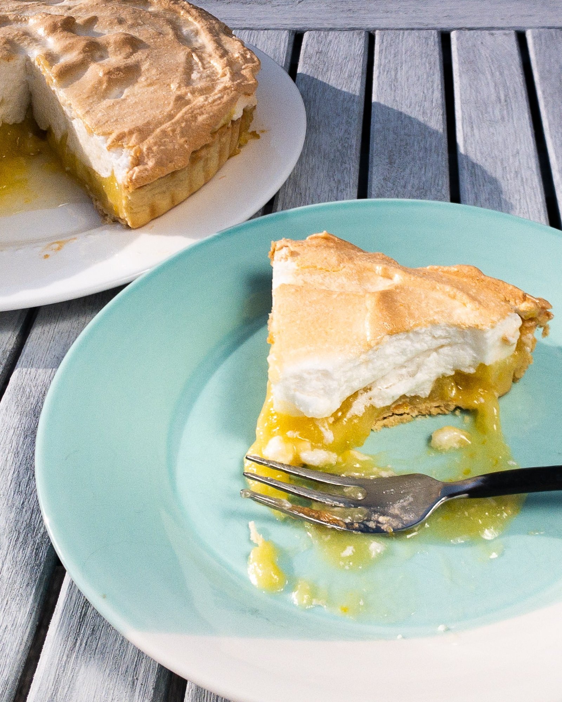

Lemon Pie Recipe

Image Source: MaxMakesMunch
This lemon meringue pie is so delicious and perfect for sharing! The homemade lemon curd filling is flavored with lemon juice and zest. It's tart, smooth, and pairs perfectly with the sweet and fluffy meringue topping.
Ingredients:
Lemon Curl
- White Sugar: 1 cup
- Flour: 2 tablespoons
- Cornstarsh: 3 tablespoons
- Water: 1 + 1/2 cups)
- Salt: 1/4 teaspoon
- Butter: 2 tablespoons
- Egg Yolk: 4(beaten)
- Pie Crust: 1 prepared pie crust, baked
- Lemons: juiced and zested(medium)
Meringue
- Egg White: 4(from Curl)
- White Sugar: 1/2 cup
Preparation Steps:
- Gather all ingredients and preheat the oven to 325 degrees F (165 degrees C).
- To make the lemon filling: Whisk 1 cup sugar, flour, cornstarch, and salt together in a medium saucepan; stir in water, lemon juice, and lemon zest. Cook over medium-high heat, stirring frequently, until mixture comes to a boil. Stir in butter.
- Place egg yolks in a small bowl and gradually whisk in 1/2 cup of hot sugar mixture.
- Whisk egg yolk mixture back into remaining sugar mixture. Bring to a boil and continue to cook while stirring constantly until thick. Remove from heat; pour filling into prepared baked pie crust.
- To make the meringue topping: Beat egg whites in a glass, metal, or ceramic bowl with an electric mixer until foamy. Gradually add sugar, continuing to beat until stiff peaks form.
- Working quickly, spread meringue over pie filling, sealing the edges at the crust. Use the back of the spoon to create peaks on the top of the meringue if you like.
- Bake pie in the preheated oven until meringue is golden brown, about 20 to 25 minutes.
- Remove pie from oven and cool at room temperature for 45 minutes to 1 hour. Transfer to the refrigerator, uncovered, and chill for a minimum of 2 hours before slicing.
- Serve and enjoy! Store any leftovers in the refrigerator and consume within 2 days.
Recipe Source: All Recipes: Grandma's Lemon Meringue Pie